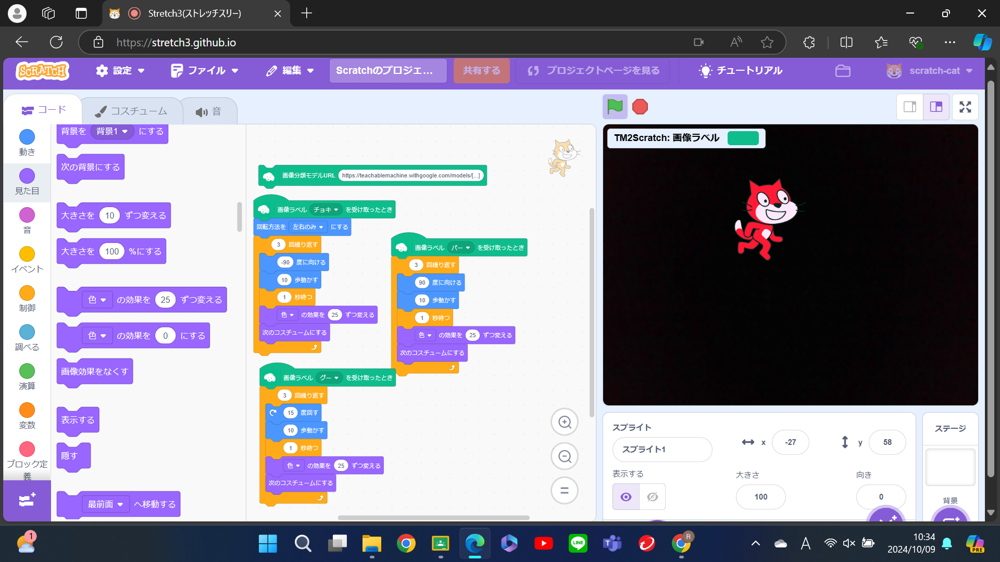
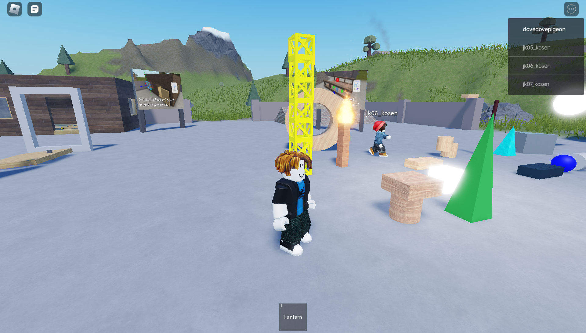
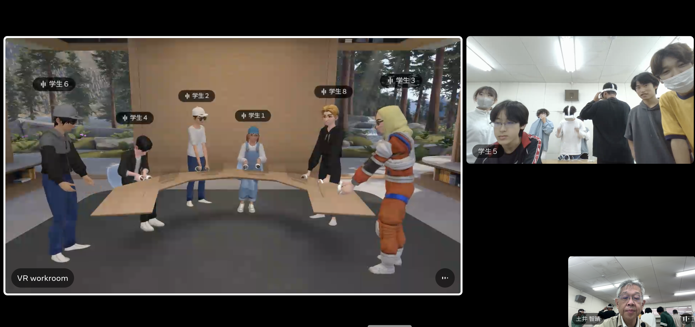

第2週目
2-1 2週目のレポートをHTMLで作る
1.内容
レポートをHTMLで作る
松尾豊さんの生成AIの動画を視聴する。
2.感想
レポートをHTMLで作ることは簡単だと思えたが、作る際に裏で動いているプログラムを1から作成するとなるととても難易度が高くなるように思えた。
松尾豊さんの生成AIの話で１番印象に残ったのは去年（2023）の生成AI周りの動きで、なぜかというとAIと政治が関係してることに興味、関心を持ったからです。
3. 2週目が完成した人は1週目のレポートも完成させる
2-2 機械学習体験

1.内容
スクラッチ3を使用し、人の手に反応してスプライトを動かす。
2.感想
プログラム自体は簡単に作れて、中学校時代に使用していたスクラッチと違い、応用のプログラムを追加することができてもっと多くの様々なプログラムを作成したいと思った。
2-3 VR（バーチャルリアリティー：Virtual Reality）会議室の体験


1.内容
robloxとworkroomsを使用してVR体験を行う。
2.感想
VR体験をして、VR内で会話や体を動かすことができ、今後VRが多くの場面で使用されていくように思えた。